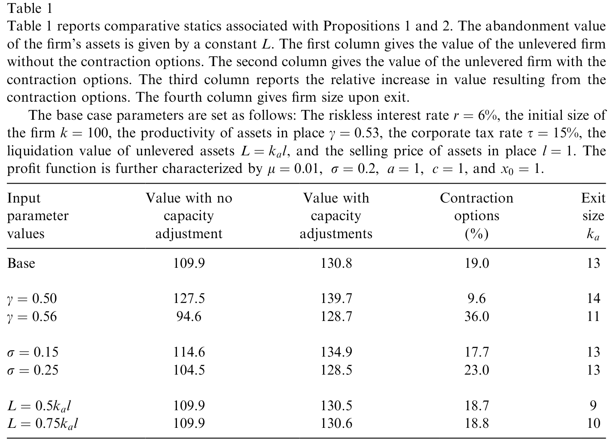
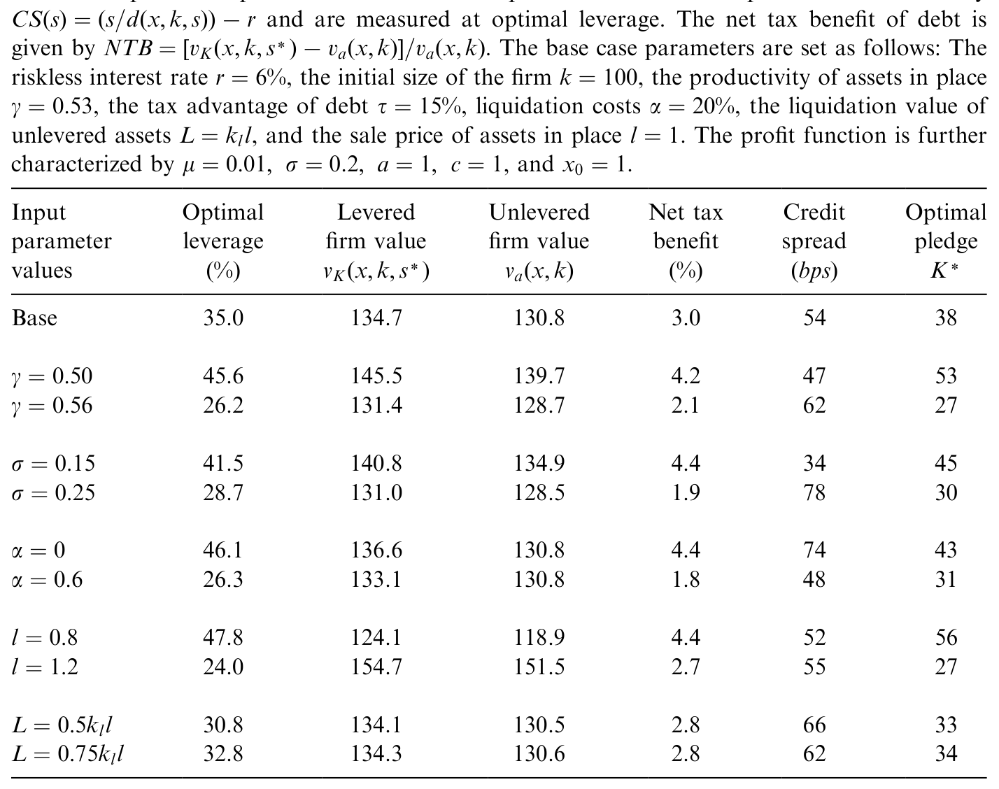
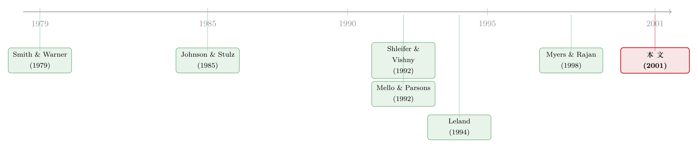

资产越「好卖」，公司反而越借不到钱——除非你把它锁进契约里
本文读的是 Morellec (2001, Journal of Financial Economics)：资产流动性（资产能多容易在二级市场卖掉）到底是抬高还是压低一家公司的借债能力，取决于债券契约管不管得住「卖资产」这件事。当债务无担保时，资产越好卖，股东越会借「卖资产」掏空债权人，结果是信用利差更高、杠杆更低；只有当资产被抵押、契约锁住处置权时，流动性才真正变成债务的朋友。
1 一个吵了很多年的问题
先抛一个看上去不该有争议的问题：一家公司的资产越「好卖」，它是更容易借到钱，还是更难？
直觉几乎是不假思索的。你借钱给一家公司，最怕的是它倒了之后资产烂在手里卖不掉；如果它的厂房、飞机、机器在二级市场上随时能变现、能卖个好价钱，那清算时你拿回的就多，债自然更安全、能借得更多。这正是 Shleifer 和 Vishny (1992) 那条被广泛接受的逻辑：清算价值（liquidation value）越高，债务能力（debt capacity）越大。
但是，接着，一个让人不太舒服的反例摆了出来。Weiss 和 Wruck (1998) 研究东方航空（Eastern Airlines）破产时撂下一句很重的话：「除非能可信地承诺不去做资产剥离（asset stripping），否则资产流动性可能反而降低、而不是提高一家公司发债的能力。」 翻译成大白话——资产太好卖，恰恰意味着公司里的人随时可以在你眼皮底下把值钱的东西一件件卖掉、把钱分给股东，留给债权人一个空壳。
于是同一个「资产流动性」，在两套故事里指向了完全相反的方向。到底谁对？
Morellec (2001) 这篇 JFE 给的答案，干净得让人有点意外：两边都对，但都只对了一半。真正决定符号的，不是资产好不好卖，而是债券契约（bond covenants）管不管得住「卖资产」这个动作。
这就是全文要反复讲透的那一个核心。下面我们顺着模型一步步走过去。
2 把「实物期权」装进一家公司
要把上面那句话讲成定理，得先有一家会随行情「边走边改」的公司。
考虑一家无限存续的企业，用资本存量 \(k\) 生产。需求由一个随机的需求冲击参数 \(x_t\) 驱动，它服从几何布朗运动 (geometric Brownian motion, GBM)：
$$x_T = x_t \exp\!\left\{\left(\mu-\tfrac{\sigma^2}{2}\right)(T-t)+\sigma\,(Z_T - Z_t)\right\}$$
企业的瞬时经营利润是
$$\pi(x_t,k)=a\,x_t^{\gamma}k^{1-\gamma}-c,\qquad \gamma\in(0,1],\ a>0,\ c>0$$
这里 \(a\,x_t^{\gamma}k^{1-\gamma}\) 是收入减可变成本，\(c\) 是每期固定成本；\(1-\gamma\) 衡量资产的生产率（\(\gamma\) 越小、资产越「能干」）。
关键的设定在于：企业不仅能经营，还能不可逆地做两件事——
- 放弃（abandon）：在 \(x\) 跌到放弃门槛时一次性退出，清算整家公司；
- 缩减产能（contract capacity）：把资本从 \(k\) 一点点卖到 \(k_a\)，每卖一单位资产拿到固定售价 \(l\)。
注意这里出现了两个流动性度量，这是全文的暗线：\(A(x,k)\) 是「现在整体放弃时能卖的价」（即 Shleifer–Vishny 那种传统的清算价值），而 \(l\) 是「随时卖掉边际一单位资产的价」。前者只在破产那一刻起作用，后者贯穿企业的一生。Morellec 后面会证明：\(A(x,k)\) 升高会增加债务能力，\(l\) 升高却会降低债务能力——同一个「流动性」，两副面孔。
把这些「边走边改」的权利写成实物期权 (real options)，无杠杆企业的价值就能拆成三块。这是全文最该看懂的一个方程：
其中永续经营价值
$$P(x_t,k)=(1-\tau)\,\mathbb{E}^{x_t}\!\left[\int_t^{\infty} e^{-r(u-t)}\,\pi(x_u,k)\,du\right]$$
（\(\tau\) 为公司税率，\(r\) 为无风险利率），而缩减期权的价值有闭式解：
$$p(k,k_a)=\frac{\gamma l}{(\gamma-W)(1-W)}\left(k\left(\frac{x}{x_l(k)}\right)^{W}-k_a\left(\frac{x}{x_l(k_a)}\right)^{W}\right)$$
折现指数 \(W\) 由 \(\beta=(\mu-\sigma^2/2)/\sigma\)、\(\lambda=\sqrt{2r+\beta^2}\) 决定，\(W=-(\beta+\lambda)/\sigma<0\)。最优的放弃与缩减门槛满足 Dumas (1991) 的高接触（high-contact）/平滑粘贴条件
$$\left.\frac{\partial^2 v_a(x,k)}{\partial x\,\partial k}\right|_{x=x_l(k)}=0$$
直觉是这样的：\(p(k,k_a)\) 这一项里赫然站着资产售价 \(l\)。资产越好卖（\(l\) 越大），缩减期权越值钱——行情一差，企业就把多余产能折现卖掉，要么救急、要么分红。表 1 用模拟把这件事量了出来：基准情形下，这些缩减期权把企业价值整整抬高了 19%；资产生产率越高（\(\gamma\) 从 0.53 降到 0.50），企业越舍不得卖，于是退出时的规模从 13 升到 14，而缩减期权的价值反而从 19% 缩到 9.6%；有意思的是，整体清算价值 \(L\) 几乎不影响这些期权的价值——因为基准情形里企业破产的概率本来就低。

Table 1: reports simulation results associated with Propositions 1 and 2
到这里，故事还很美好：会卖资产的公司更值钱。问题出在下一步——当这家公司借了债之后。
3 反转：股东手里的「卖资产」按钮，成了债主的噩梦
接着，一个自然的问题是：上面这些让企业更值钱的实物期权，是站在谁的立场上行权的？
答案是股东。债发出去之后，缩减门槛、违约门槛都是事后（ex post）由股东选来最大化股权价值，而不是事前（ex ante）最大化企业价值的那条。Morellec 沿用 Mello 和 Parsons (1992) 的设定：债务是无限期的，付固定票息 \(s\)，违约即清算，且违约时绝对优先（absolute priority）得到执行。在「按存量定义违约」的设定下，股东会在企业净经济价值为负时才违约，违约门槛由平滑粘贴条件给出：
$$x_d(k)=\left[\frac{W}{W-\gamma}\,\frac{c+s}{r\,a\,k^{1-\gamma}}\left(r-\gamma\mu-\gamma(\gamma-1)\frac{\sigma^2}{2}\right)\right]^{1/\gamma}$$
现在，关键的一步来了。资产流动性 \(l\) 给股东多开了一个「按钮」：不必非要靠股东注资续命，企业可以靠卖资产来付票息。 只要资产的边际估值低于售价 \(l\)，卖资产对股东就是划算的；而且企业在经营时卖资产能把资源配置到更好的用途，困境时卖资产又是最便宜的融资方式。
听起来仍然是好事？对股东是好事，对债主却是灾难。因为股东卖掉的，恰恰是债权人将来要靠它抵债的那部分资产。卖资产一方面缩小了违约时的企业规模，另一方面缩短了在册资产的平均寿命——两头都在啃食债券价值。在理性预期下，债权人会预见到这一点，于是信用利差（credit spread）当下就会跳上去补偿。
这就把前面那个吵架的问题解开了。先看一个对照基准：如果契约禁止企业卖资产（产能固定），那么相关的流动性度量只剩传统的清算价值 \(A(x,k)\)，此时债务价值随清算价值严格递增——
$$d(x,k,s)=\frac{s}{r}\left(1-\left(\frac{x}{x_d(k)}\right)^{W}\right)+\min\big[(1-\alpha)A(x_d(k),k),\,P\big]\left(\frac{x}{x_d(k)}\right)^{W}$$
配上信用利差的定义
$$CS(s)=\frac{s}{d(x,k,s)}-r$$
立刻得到 Shleifer–Vishny 那一侧的结论：清算价值越高，信用利差越低、杠杆越高（命题 4）。这就是「流动性是债务的朋友」。
但真正关键的一步在于：一旦契约允许企业自由卖资产，\(l\) 升高就会通过那个「卖资产按钮」抬高股权价值、压低债务价值。于是反转出现——资产越好卖，债主越怕，信用利差越高，企业能借的、愿借的反而越少。这正是 Weiss–Wruck 那一侧的结论，也是 Myers 和 Rajan (1998)「流动性悖论（paradox of liquidity）」的精神：流动性削弱了借款人「承诺不乱动资产」的能力。
同一个模型，靠切换一条契约假设（能不能卖资产），就同时复现了文献里两套针锋相对的直觉。这是这篇论文最漂亮的地方：它不是在两种说法里选边站，而是指出了二者各自成立的条件。
4 把资产「锁进契约」：担保债务的最优剂量
然后，问题就自然地推进到：既然「能自由卖资产」会伤害债主，那企业能不能干脆把资产抵押给债务、用契约锁死处置权？这就是有担保债务（secured debt）。
Morellec 把净效应写成一个清清楚楚的权衡：资产流动性对企业价值的净影响 = 它给股东带来的经营灵活性增量（equity 上升）− 它给债权人造成的损失（debt 下降）。
- 当经营灵活性的价值 < 债务价值的损失时，把资产抵押出去（发担保债）能提升企业价值；
- 当反过来时，发无担保债更优。
注意这里有个和 Leland (1994) 那类「资产销售外生」的模型截然不同的预测：在本文里，把资产全额抵押并不总是好事。因为锁死处置权会扭曲企业的经营政策，逼它在不该留的时候硬留着低效资产——也就是在无生产力的资产上「过度投资」。于是最优解不是「全押」也不是「不押」，而是只抵押一部分资产；而这个最优抵押规模（the optimal size of the pledge）取决于企业与行业特征——资产生产率、需求不确定性等。表 4 给出了担保程度变化时信用利差的比较静态。

Table 4: reports comparative statics with Propositions 11. Credit spreads are defined by
把这套机制接回最开头那个「或有权益分析为什么失灵」的老问题，收获就更大了。传统的结构化模型（contingent claims analysis）一直有个尴尬：它算出来的最优杠杆太高、信用利差太低，和现实对不上（关于结构模型把信用利差「算得太散」这件事，可参见《结构模型给债券定价，错的从来不是「太低」，而是「太散」》）。Morellec 指出：一旦把「可能的资产出售 + 担保条款」放进模型，违约利差会上升 10–30%，最优杠杆会下降 30–60%——刚好把模型往现实那一侧拉。换句话说，现实中那些「低得反常的杠杆 + 高得反常的利差」，未必是模型缺了什么神秘风险溢价，而可能就是资产流动性与契约设计在起作用。
这条线，和这家公司「随时可能在还债日之前就出事」的结构定价直觉一脉相承（可参见《公司随时都可能倒下，期权定价却只盯着还债那一天》）；而它的经验版本——「会卖家底续命」的公司在现实里长什么样——可以对照读《现金只有 330 万，却烧了六年：一家「明星公司」是怎样靠『卖家底』续命的》。
5 文献脉络
把这篇论文放回它生长的那条藤上，会看得更清楚。
最早，Smith 和 Warner (1979) 把「债券契约（bond covenants）」当成解决股东–债权人利益冲突的合同工具来分析，奠定了「契约约束行为」的视角；Johnson 和 Stulz (1985)、Barclay 和 Smith (1995) 则把目光投向担保债务与企业负债的优先级结构。
接着是两条几乎同时起跑、却指向相反的支流。一条是 Shleifer 和 Vishny (1992)：清算价值越高、债务能力越大——流动性是朋友。另一条到了 Weiss 和 Wruck (1998) 与 Myers 和 Rajan (1998) 那里，变成了「流动性悖论」——好卖的资产削弱了承诺、反而削弱借债能力。
与此并行的，是结构化定价这条主干：Mello 和 Parsons (1992) 把代理成本搬进或有权益框架并定量度量；Leland (1994) 给出了带契约的最优资本结构闭式解，但其中资产销售是外生的。Morellec (2001) 站的位置，恰恰是把上面这两条线焊到了一起——用一个资产销售内生的实物期权模型，让「流动性是朋友还是敌人」这个符号，由契约结构内生地决定，并由此推出最优担保剂量。

6 评论与延伸（Q&A + 研究方向）
(a) 几个可能的疑问
Q：模型里有两个「流动性」——\(A(x,k)\) 和 \(l\)，为什么它们对债务能力的影响方向相反？
因为它们作用的时点不同。\(A(x,k)\) 是整体清算价值，只在违约那一刻把更多钱交到债权人手里，所以它升高 → 债更安全 → 利差降、杠杆升。\(l\) 是边际资产的随时售价，它升高 → 股东「卖资产续命/分红」的期权更值钱 → 在违约前就持续抽走债权人的抵押基础 → 利差升、杠杆降。一个是「破产时的回收」，一个是「活着时被掏空的速度」。
Q：既然卖资产伤害债主，为什么企业不干脆全额抵押、彻底锁死？
因为锁死处置权会扭曲经营：在行情该收缩、该卖掉低效资产时，担保条款逼企业硬留着它们，造成在无生产力资产上的「过度投资」。这部分效率损失要由企业自己承担。所以最优是部分抵押——在「保护债主」与「保留经营灵活性」之间取平衡，最优抵押规模随资产生产率、需求波动而变。
Q：这和 Leland (1994) 的关键区别到底在哪？
Leland 模型里资产销售/清算是外生给定的，所以「契约锁不锁资产」无关紧要，全额担保不会有副作用。本文让资产销售内生于股东的最优行权，于是担保条款会反过来改变企业的实际经营政策——这才使得「最优担保 < 100%」成为可能，也才让流动性的符号变得依赖契约。
Q：「按存量定义违约 + 绝对优先」意味着什么反直觉的结论？
Morellec 证明：在这套设定下，只要绝对优先被执行，违约时股东其实拿不到任何东西，因而股东在做违约决策时根本不会把企业的清算价值内部化。这就是为什么违约门槛由股权价值的平滑粘贴条件决定，而不等于最大化企业价值的放弃门槛——代理成本由此产生。
Q：那 10–30%／30–60% 的数字可信吗？是不是靠挑参数挑出来的？
它来自比较静态模拟，量级依赖基准参数（\(r=6\%\)、\(\gamma=0.53\)、\(\sigma=0.2\) 等），所以应当读成「方向 + 数量级」而非精确预测。但它的价值在于：用一个能被现实校准的机制，定性地解开了结构模型「杠杆太高、利差太低」的老毛病，这比具体数字更重要。
Q：模型假设资产售价 \(l\) 是常数、与行业状态无关，这合理吗？
这是为了闭式解做的简化。作者明说可以扩展到 \(l\) 依赖行业状态 \(x\) 的情形，但「不会带来更多经济学洞见」。不过这恰恰是它和 Shleifer–Vishny 的张力点：现实中行业不景气时往往同行一起抛售、\(l\) 同时下跌（fire sale），把这层一般均衡放回来，担保的价值与最优剂量可能会被显著改写。
(b) 几个可能的研究问题与提案
1. 担保溢价的横截面：用契约文本检验「最优部分抵押」
- 【经济故事】模型预测最优抵押规模随资产生产率、需求不确定性变化，且全额担保会因扭曲经营而损害价值。如果真如此，行业层面的资产可再配置性应当与担保比例、担保溢价呈非单调关系。
- 【可行性】中。可用债券契约数据库（Mergent FISD 的 security level、契约条款）结合行业资产专用性度量。识别上的难点是抵押决策与企业质量内生，需要找外生冲击（如某类抵押法律变化）。可与《未动用的抵押品，是高评级公司留给坏天气的「救生艇」》对话。
2. 「卖资产续命」在公司债利差里的定价
- 【经济故事】本文核心机制是：可自由处置的流动资产会通过抬高股东的「卖资产期权」而压高利差。能否在公司债横截面里，直接识别出「资产更易变现 × 契约更松」的发行人利差更高？
- 【可行性】中高。资产流动性可用资产有形性、二级市场活跃度代理；契约松紧用 covenant index。结合 TRACE 的利差数据，做交互项回归。挑战在于把「流动性」与「资产质量」分开——这正是本文两个 \(l\) 与 \(A\) 区分的经验对应。
3. 火线抛售下的最优担保：把 \(l\) 内生化
- 【经济故事】若把售价 \(l\) 设成随行业状态下行而下跌（同行同时抛售），担保的保护作用在最需要它的坏天气里恰恰最弱。最优抵押剂量会不会因此系统性偏低、且顺周期？
- 【可行性】中。理论上可在本文框架里令 \(l=l(x)\) 重解；实证上需要行业层面同步抛售的度量（如同业资产出售集中度）。doable，但闭式解可能失守，要靠数值方法。
4. 外资债权人与「资产剥离」承诺
- 【经济故事】跨境发债时，外国债权人对借款人资产处置的监督与法律追索更弱，本文「承诺不剥离资产」的机制会被放大。是否外资持有比例更高的发行人，更依赖担保条款来发债？
- 【可行性】中低。需要发行人层面的债权人国别构成（较难获得）与担保条款数据。识别可借助投资者保护/法律环境的跨国差异，但内生性较强，需谨慎。
参考文献
- Barclay, M., Smith, C. (1995). The priority structure of corporate liabilities. Journal of Finance 50(3), 899–917.
- Dumas, B. (1991). Super contact and related optimality conditions. Journal of Economic Dynamics and Control 15(4), 675–685.
- Johnson, H., Stulz, R. (1985). An analysis of secured debt. Journal of Financial Economics 14(4), 501–521.
- Leland, H. (1994). Corporate debt value, bond covenants, and optimal capital structure. Journal of Finance 49(4), 1213–1252.
- Mello, A., Parsons, J. (1992). Measuring the agency cost of debt. Journal of Finance 47(5), 1887–1904.
- Morellec, E. (2001). Asset liquidity, capital structure, and secured debt. Journal of Financial Economics 61(2), 173–206.
- Myers, S., Rajan, R. (1998). The paradox of liquidity. Quarterly Journal of Economics 113(3), 733–771.
- Pindyck, R. (1988). Irreversible investment, capacity choice, and the value of the firm. American Economic Review 78(5), 969–985.
- Shleifer, A., Vishny, R. (1992). Liquidation values and debt capacity: a market equilibrium approach. Journal of Finance 47(4), 1343–1366.
- Smith, C., Warner, J. (1979). On financial contracting: an analysis of bond covenants. Journal of Financial Economics 7(2), 117–161.
- Weiss, L., Wruck, K. (1998). Information problems, conflicts of interest, and asset stripping: Chapter 11's failure in the case of Eastern Airlines. Journal of Financial Economics 48(1), 55–97.
评述者的判断。 这篇论文的贡献，在我看来不在于哪个具体数字，而在于它把一个看似经验性的争论（流动性到底帮不帮债主）变成了一个有条件的定理：符号由契约结构内生决定。它的优雅之处是用同一套实物期权机器，既复现了 Shleifer–Vishny，又复现了 Weiss–Wruck，并顺手给结构模型「杠杆太高、利差太低」的顽疾开了一味药。对识别（在理论模型里更应说「对设定」）的担忧主要有两条：一是售价 \(l\) 为常数、与行业状态无关，等于关掉了火线抛售这条最现实的渠道，而那恰恰是流动性最该咬人的时候；二是「绝对优先严格执行」在现实破产中常常被违反，一旦放松，股东在违约时的回收为正，违约门槛与担保剂量都会移动。我接下来最想看到的，是把 \(l=l(x)\) 内生化后的最优担保是否顺周期，以及用公司债契约文本与 TRACE 利差，把「可自由处置的流动资产 → 更高利差」这条核心预测，干净地在横截面里量出来。